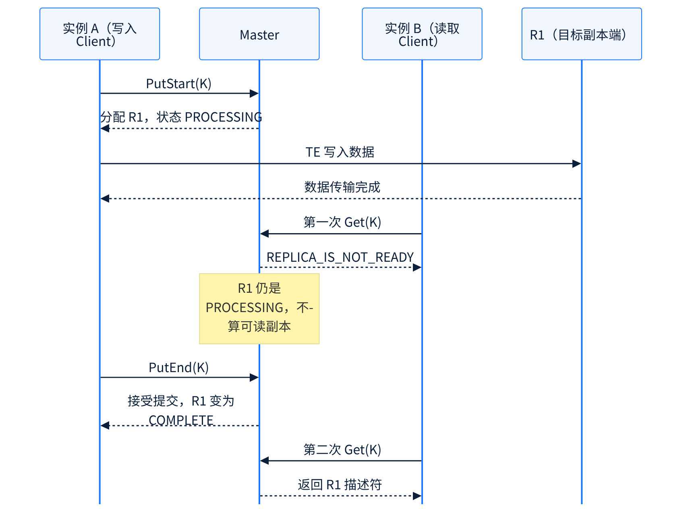

摘要：A 的字节已经写完，B 仍可能查不到可读副本。数据搬完与副本提交，为什么是两个时刻？
实例 A 正在把前缀 KV 写入共享缓存，key 是 K。
数据已经开始通过网络搬运，另一台机器上的实例 B 恰好查询同一个 key。此时 B 应该读到什么？
如果系统只看"空间已经分配"，就可能把一份尚未写完的数据交出去。如果只看"字节已经到达"，又可能忽略提交这一步。
本篇讨论普通新对象 Put，不混入覆盖写。沿着 Client::Put 走一遍，看清数据搬完、副本提交、读方可见这三个时刻为什么不能合并。
一次 Put 可以拆成三个动作：
PutStart：向 Master 申请副本空间。PutEnd：提交写入结果，让副本变得可读。PutStart 返回的不是"稍后告诉你"，而是已经分配好的副本描述：地址、长度、传输端点。此时副本已经进入 Master 的元数据表，但状态是 PROCESSING。
接下来，A 通过 Transfer Engine 把切片写到目标副本。传输返回成功，只说明字节到了远端内存段，不说明这份副本可以被读。
真正打开可见性的是 PutEnd。Master 把目标副本从 PROCESSING 翻成 COMPLETE，Client::Put 才返回成功。

图注：这是普通成功路径。数据流只发生在 A 与 R1 之间；指向 Master 的箭头只表示申请、查询或提交。B 第二次拿到的是读取候选，后续读取仍可能失败。
B 第一次查询时，对象其实已经存在——PutStart 就把它插进了元数据表。但 Master 返回的不是"对象不存在"，而是 REPLICA_IS_NOT_READY。
原因在 GetReplicaList：它遍历副本，只把通过 IsReplicaReadable 的副本放进返回列表。
IsReplicaReadable 要求三件事：
COMPLETE；PROCESSING 在第一步就被排除。所以"对象查得到"和"副本读得到"是两件事。
如果整个副本列表为空，Master 还会再分一次：
REMOVED：返回 OBJECT_NOT_FOUND，让调用方放弃；REPLICA_IS_NOT_READY，值得短暂重试。分析：这两个错误码的区别，直接决定上层该不该重试。把 REPLICA_IS_NOT_READY 当成对象不存在而放弃，会错过马上就能读到的数据。
空间申请成功，后续传输仍可能失败。客户端不能把所有申请过的位置都标记为成功，也不能把已完成的一侧一起撤销。
Client::Put 在传输结束后调用 DetermineFinalizeDecision，由它决定 PutEnd 与 PutRevoke 分别作用于哪一类副本。
默认可靠模式下，条件是严格的：
两者都满足才 PutEnd(ALL)；否则 PutRevoke(ALL)，本次 Put 失败。
双副本模式 FLEXIBLE_DUAL_REPLICA 放宽了要求：
PutEnd(ALL)；PutEnd(MEMORY) + PutRevoke(NOF_SSD)；PutEnd(NOF_SSD) + PutRevoke(MEMORY)；PutRevoke(ALL)。所以同一条"Put 成功"，在不同配置下强度不同。默认路径要求分配到的副本全部成功；双副本模式只要求一侧成功。调用方若依赖副本数，应当读配置或指标，而不是假设。
PutRevoke 本身也有限制：它只撤销仍处于 PROCESSING 的目标副本。如果目标类别里已经有非 PROCESSING 的副本（例如 COMPLETE），Master 返回 INVALID_WRITE，而不是误删已完成的数据。这正好要求调用方"提交成功的那一类，撤销失败的那一类"。
按上一节的提交条件处理：能提交的提交，不能提交的撤销，最终是否成功由 DetermineFinalizeDecision 决定。不要笼统地说"Put 失败了"，要区分是空间不足、部分副本失败，还是全部失败。
A 完成了 PutStart，却在 PutEnd 或 PutRevoke 之前崩溃。对象停在 PROCESSING，既不可读，也挡住后续同 key 写入。
Master 用两个超时收尾：
| 参数 | 默认 | 作用 |
|---|---|---|
put_start_discard_timeout_sec | 30 秒 | 超时后允许同 key 的新 PutStart 顶替旧对象 |
put_start_release_timeout_sec | 600 秒 | 超时后旧对象占用的空间才可被回收 |
关键细节：顶替不是复用旧空间，而是重新分配。旧的 PROCESSING 副本被移入 discarded_replicas_，等第二个超时到期后才释放。所以客户端消失后，资源不会立刻恢复，30 秒内它仍是故障源。
A 发出 PutEnd，Master 执行成功，响应却在网络中丢失。
对 A 来说，这次调用超时了；对 Master 来说，对象已经 COMPLETE。
超时只能说明客户端没拿到结果，不能证明服务端没有执行。
此时如果 A 重试同一个 key 的 Put：PutStart 发现已有 COMPLETE 副本，返回 OBJECT_ALREADY_EXISTS；Client::Put 把这个错误当成功返回，已有内容不变。
这带来一个必须理解的结果：重试是幂等的，但不是覆盖。
普通 Put 遇到已存在的 key，语义是"保留已有内容 + 幂等成功"，不是"用新数据替换旧数据"。
COMPLETE 副本：OBJECT_ALREADY_EXISTS，Client::Put 返回成功，内容不变。PROCESSING 且未超过 discard 超时：同样返回 OBJECT_ALREADY_EXISTS。PutStart 顶替，重新分配空间。如果业务需要替换内容，应使用 Upsert，并核对它在并发写入下的语义。把 Put 重试当成覆盖写，是这里最容易犯的错。
字节已经写完，B 也终于从 R1 读回了数据。但读回来的字节，这次 Get 为什么还可能失败？
源码延伸：原系列篇2；Client::Put、PutStart、PutEnd、PutRevoke、IsReplicaReadable。版本基线为 v0.3.13.post1。
[源码解析版](../../02-put-path.md) · [系列目录与排版说明](README.md)
[上一篇](02-objects-and-replicas.md) · [下一篇](04-get-and-lease.md)